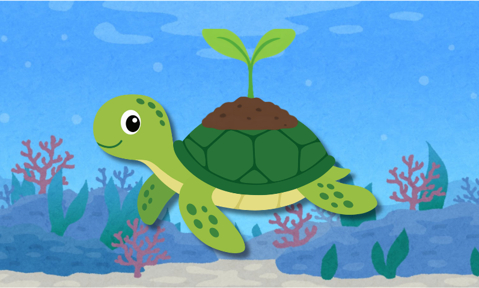

Cultivando o Saber
Uma plataforma desenvolvida para transformar a educação ambiental voltada para os alunos do Ensino Fundamental. Por isso, conectamos o aprendizado de forma simples e direta às metas da ODS 15 (Vida Terrestre), mostrando que defender nossas florestas e animais é uma missão que todos nós podemos abraçar desde cedo.

Aprendendo de forma divertida
Aprender pode ser muito mais interessante através de jogos lúdicos, quizz, cards informativos e missões sustentáveis. Cada atividade gera experiência e conquistas, incentivando a conscientização socioambiental.
Sua Jornada Sustentável
Acompanhe novas etapas no mapa

Cadastro
Jogos
Evolução
ODS
Guardião